以下是可以在118.178.111.167 23333端口使用的先行卡的列表。下载补丁后即可使用。
使用方法：原版游戏下载补丁后解压至游戏文件夹，YGOMobile请自定义数据库（方法请查看压缩包内使用说明），暂不保证对其他版本的支持。
资料来源：任天堂世界论坛。
脚本作者：ygopro-pre-script，YGOPRO。目前所有脚本来自于以上这2个项目，在此对各自的贡献者表示感谢。
版权声明：转载请注明出自本页面，并完整保留附带的使用说明文档。如果您想对本项目进行修改，请移步这里，但我们建议您直接参与官方项目ygopro-pre-script。
星星和加号图标是Yusuke Kamiyamane的作品。
更新记录
- 2017-05-01 12:33
- 修复：地底恐魔新卡未被标记为「地底恐魔 巨魔」卡的问题。
- 2017-05-01 01:23
- 新卡：近期公布新卡6张。
- 更新：部分卡片更换为正式密码。
- 更新：优化全部卡图。
- 更新：更换打包方式。
- 2017-04-28 18:38
- 修复：点阵跳离士①②效果可以在同一回合发动的问题。
- 修复：真红眼幼龙效果不能守备表示特殊召唤的问题。
- 2017-04-28 17:01
- 修复：DDD 超死伟王 黑地狱终末神破坏效果没有次数限制的问题。
- 修复：霸王白龙 异色眼辉翼龙攻击力上升效果无效的问题。
- 修复：双汇编亚龙能除外自己发动效果的问题。
- 修复：附锁链的真红眼牙多次攻击的处理。
- 修复：潜海奇袭①效果在对方回合把场地从手卡发动的问题，和破坏效果无效的问题。
- 修复：秘旋谍的潜伏者正规出场后能用其他卡的效果特殊召唤的问题。
- 修复：秘旋谍任务 - 救援回收效果处理时这张卡被破坏仍有效的问题。
- 修复：星遗物-『星杯』检索效果不能被灰流丽对应的问题。
- 修复：星杯神乐 夏娃不能成为自己的效果对象的问题。
- 2017-04-22 19:46
- 修复：No.41 泥睡魔兽 睡梦貘没有苏生限制的问题。
- 修复：城塞鲸必须自己场上有空格子才能特殊召唤的问题。
- 修复：海龙神之怒判断区域错误的问题。
- 修复：潜海奇袭破坏效果无效的问题。
- 2017-04-22 19:05
- 修复：亚马逊的急袭特殊召唤怪兽不上升攻击力的问题。
- 修复：潜海奇袭除外效果可以多次发动的问题。
- 2017-04-22 18:32
- 修复：ROM云雌羊可以回收和特殊召唤同名卡的问题。
- 修复：真红眼幼龙检索效果不能被灰流丽对应的问题。
- 修复：附锁链的真红眼牙装备的怪兽可以额外直接攻击的问题。
- 2017-04-22 18:06
- 修复：真红眼黑刃龙③效果能从对方墓地把怪兽特殊召唤的问题。
- 修复：潜海奇袭不能把海从手卡发动的问题。
- 2017-04-22 13:53
- 修复：已经发动的亚马逊的急袭不能在战斗阶段开始时发动①效果的问题。
- 2017-04-22 13:20
- 修复：亚马逊斥候可以回收任意卡的问题。
- 修复：究极进化药可以除外非怪兽卡的问题。
- 2017-04-22 11:30
- 修复：DDD 超死伟王 紫地狱终末神怪兽①效果无效的问题。
- 修复：亚马逊王女③效果能把自己送去墓地发动和能特殊召唤同名卡的问题。
- 修复：潜海奇袭临时除外的卡不会回场的问题。
- 2017-04-22 11:14
- 修复：ROM云雌羊②效果无效的问题。
- 修复：亚马逊的叫声①效果无效的问题。
- 修复：秘旋谍任务 - 救援墓地效果无COST的问题。
- 2017-04-22 11:05
- 修复：未正规召唤的白斗气海豚被破坏也能发动效果的问题。
- 修复：No.68 魔天牢 桑达尔丰报错的问题。
- 修复：No.71 海异鲨未标记No.号码的问题。
- 修复：双汇编亚龙要求目标怪兽可以被取对象才能发动的问题，和除外对象错误的问题。
- 修复：亚马逊的叫声效果对象以外的怪兽也可以攻击的问题。
- 修复：亚马逊的急袭不会把卡除外的问题。
- 2017-04-22 00:48
- 新卡：近期新卡35张。
- 2017-04-17 18:44
- 修复：淘气仙星灯光舞台选择的卡离场过的场合结束阶段也会要求发动的问题。
- 修复：鬼雷弦阱在魔陷区只有1个格子时也能从手卡发动的问题。
- 2017-04-17 01:55
- 修复：雷仙神的特殊召唤被无效并破坏的场合也发动回复效果的问题。
- 2017-04-17 01:48
- 修复：异色眼枪兵龙①效果无法发动的问题。
- 2017-04-17 01:33
- 修复：淘气仙星·曼珠诗华能以里侧表示的怪兽为对象发动效果的问题。
- 2017-04-16 18:09
- 修复：入侵蠕虫未被标记为「异虫」卡的问题。
- 2017-04-16 11:29
- 修复：电子界男巫能以连接怪兽为效果对象的问题。
- 修复：霸王眷龙 异色眼和霸王眷龙 暗叛逆特殊召唤效果无效的问题。
- 修复：拓扑逻辑轰炸龙伤害效果无效的问题。
- 修复：变则齿轮除外对象错误的问题。
- 2017-04-16 01:10
- 新卡：COTD(1001)全部新卡、异色眼枪兵龙、侏罗纪冲击。
- 更新：优化部分卡图。
- 2017-04-13 17:56
- 修复：地底恐魔 小魔女在场上只有自己时也能发动无效效果的问题。
- 2017-04-13 13:54
- 修复：地底恐魔 小魔女没有把发动无效也会把对象覆盖的问题。
- 修复：淘气仙星·曼珠西卡效果在自己场上没有格子的场合也能发动的问题。
- 修复：兰卡之虫惑魔将卡回到手卡后没有切洗手卡的问题。
- 2017-04-13 02:47
- 新卡：近期公布新卡5张。
- 修复：代理龙不能代替自己其他卡破坏的问题。
- 修复：时械神 拉结恩伤害效果发动次数无限的问题。
- 2017-04-11 01:15
- 修复：救援雪貂自身在连接区时可能不能正常特殊召唤的问题。
- 2017-04-10 23:06
- 修复：时械神 拉茨伊恩对自己有战斗伤害的问题。
- 修复：惩戒之龙①效果可以空发和不能被连锁的问题。
- 修复：与星遗物的邂逅效果处理时不在场上仍有效的问题。
- 2017-04-10 02:54
- 修复：灵摆切换未被标记为「灵摆」系列卡的问题。
- 2017-04-10 02:53
- 修复：鬼雷弦阱应为魔法卡。
- 修复：星杯的守护龙判断对方怪兽所连接区错误的问题，和②效果发动不限制次数的问题。
- 修复：星遗物-『星杯』①效果无法发动的问题。
- 修复：星杯剑士 奥拉姆在两个所连接区都有怪兽时无法发动效果的问题。
- 修复：与星遗物的邂逅②效果无法发动的问题。
- 2017-04-09 21:51
- 新卡：近期公布新卡共11张。
- 更新：优化部分卡图。
- 2017-04-06 00:47
- 修复：淘气仙星·圣安琪儿上升攻击力永久持续的问题。
- 2017-04-04 14:48
- 修复：抢救代理驱动员①效果战斗破坏不能触发的问题。
- 2017-04-03 22:21
- 修复：淘气仙星灯光舞台可以以场地区的卡为对象发动效果的问题。
- 2017-04-03 22:00
- 修复：防火龙②效果触发错误的问题。
- 2017-04-03 21:33
- 修复：刚鬼 巨人食人魔攻击力错误的问题。
- 2017-04-03 17:04
- 修复：星杯剑士 奥拉姆无法使用的问题。
- 2017-04-03 11:35
- 修复：No.41 泥睡魔兽 睡梦貘等卡与连接怪兽同时在场时会卡住的问题。
- 2017-04-03 10:56
- 修复：电子界男巫能以自己怪兽为对象发动效果的问题。
- 修复：抢救代理驱动员①效果和②效果重复的问题。
- 2017-04-03 00:43
- 修复：抢救代理驱动员②效果报错的问题。
- 2017-04-03 00:37
- 修复：防火龙②效果触发错误的问题。
- 修复：淘气仙星灯光舞台强制发动的卡不能选择对象的问题。
- 2017-04-02 17:59
- 新卡：近期公布新卡9张。
- 更新：更改部分卡片密码。
- 注意：部分连接召唤与电子界族相关卡片只能在内测版本更新后使用。
- 2017-03-27 01:11
- 新卡：近期公布新卡33张。
- 注意：连接召唤预计将于近期开始测试，但目前相关的卡全部无法正常使用。
- 2017-03-16 23:16
- 新卡：电子界工具、战线复归。
- 修复：霸王眷龙 凶饿毒能复制魔法·陷阱卡的问题。
- 2017-03-13 15:14
- 新卡：霸王眷龙 凶饿毒、紧急救急救命救援。
- 修复：暗黑界的洗脑的处理。
- 2017-03-06 23:43
- 修复：DD 恶妖提丰和DDD 怒涛大王 决策凯撒无法使用的问题。
- 2017-03-06 00:21
- 新卡：近期公布新卡23张。
- 注意：连接召唤相关规则暂未确定，目前相关的卡全部无法正常使用。
- 更新：删除已经正式更新的卡。
卡片列表
| 卡图 | 卡名 | 效果 |
|---|---|---|
| 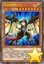 | 异色眼枪兵龙 | [怪兽|效果] 龙/光 [★8] 3000/2000 ①：自己场上的灵摆怪兽被战斗·效果破坏的场合，把自己场上1只怪兽解放才能发动。这张卡从手卡特殊召唤。 ②：这张卡攻击的场合，对方直到伤害步骤结束时魔法·陷阱卡不能发动。 ③：自己场上的「异色眼」卡被战斗·效果破坏的场合，可以作为代替把自己的手卡·怪兽区域·灵摆区域1张「异色眼」卡破坏。 |
| 娱乐伙伴 五虹之魔术师 | [怪兽|效果|灵摆] 魔法师/光 [★1] 100/100 12/12 ←12 【灵摆】 12→ ①：自己不是从额外卡组不能灵摆召唤。这个效果不会被无效化。 ②：双方让自身的魔法与陷阱区域盖放的卡数量的以下适用。 ●0张：自己场上的怪兽不能攻击并不能把效果发动。 ●4张以上：自己场上的怪兽的攻击力变成原本数值的2倍。 【怪兽效果】 ①：这张卡在墓地存在，自己场上有魔法·陷阱卡被盖放的场合才能发动。墓地的这张卡在自己的灵摆区域放置。 | |
 | 霸王紫龙 异色眼猛毒龙 | [怪兽|效果|融合|灵摆] 龙/暗 [★10] 3300/2500 1/1 ←1 【灵摆】 1→ ①：1回合1次，以自己场上1只融合怪兽为对象才能发动。那只怪兽的攻击力直到回合结束时上升对方场上的怪兽数量×1000。 【怪兽效果】 「凶饿毒」怪兽＋「异色眼」怪兽 这张卡用融合召唤以及灵摆召唤才能特殊召唤。 ①：1回合1次，以对方场上1只表侧表示怪兽为对象才能发动。直到结束阶段，这张卡的攻击力上升那只怪兽的攻击力数值，这张卡得到和那只怪兽相同的原本的卡名·效果。 ②：怪兽区域的这张卡被破坏的场合才能发动。选自己的灵摆区域1张卡特殊召唤，这张卡在自己的灵摆区域放置。 |
| 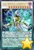 | DDD 超死伟王 白地狱终末神 | [怪兽|效果|同调|灵摆] 恶魔/暗 [★10] 3500/3000 1/1 ←1 【灵摆】 1→ ①：1回合1次，对方怪兽的攻击宣言时以自己场上1只「DDD」同调怪兽为对象才能发动。持有那只怪兽的攻击力以下的守备力的对方场上的怪兽全部破坏，给与对方破坏的怪兽数量×1000伤害。 【怪兽效果】 「DD」调整＋调整以外的「DDD」怪兽1只以上 ①：只要这张卡在怪兽区域存在，对方不能把自己场上的怪兽作为效果的对象。 ②：这张卡已在怪兽区域存在的状态，这张卡以外的怪兽召唤·特殊召唤的场合才能发动。对方选自身场上1只灵摆怪兽。那只怪兽以外的对方场上的怪兽的效果无效化。 ③：怪兽区域的这张卡被破坏的场合才能发动。这张卡在自己的灵摆区域放置。 |
 | DDD 超死伟王 黑地狱终末神 | [怪兽|效果|超量|灵摆] 恶魔/暗 [☆8] 3500/3000 1/1 ←1 【灵摆】 1→ ①：1回合1次，另一边的自己的灵摆区域有「DD」卡存在的场合才能发动。从额外卡组把「DDD 超死伟王 黑地狱终末神」以外的1只「DDD」超量怪兽特殊召唤。 【怪兽效果】 8星「DDD」怪兽×2 ①：这张卡超量召唤成功时才能发动。选自己的额外卡组1只表侧表示的「DD」灵摆怪兽在这张卡下面重叠作为超量素材。 ②：自己场上的灵摆怪兽不会被效果破坏。 ③：1回合1次，把这张卡1个超量素材取除，以自己场上的灵摆怪兽数量的对方场上的怪兽为对象才能发动。那些怪兽破坏。 ④：怪兽区域的这张卡被破坏的场合才能发动。这张卡在自己的灵摆区域放置。 |
 | 超重蒸鬼 铁道王-O | [怪兽|效果|同调] 机械/地 [★12] 2000/4800 「超重武者」调整＋调整以外的「超重武者」怪兽2只以上 这张卡在规则上也当作「超重武者」卡使用。 ①：这张卡可以用表侧守备表示的状态作出攻击。那个场合，这张卡用守备力当作攻击力使用进行伤害计算。 ②：1回合1次，把最多2张手卡丢弃，以丢弃数量的对方场上的卡为对象才能发动。那些卡破坏。 ③：1回合1次，自己主要阶段才能发动。双方墓地的魔法·陷阱卡全部除外，给与对方除外数量×200伤害。 |
 | 魔界台本「魔界的宴咜女」 | [魔法|永续] 这个卡名的①的效果1回合可以使用最多2次。 ①：把自己场上1只「魔界剧团」怪兽解放，以自己墓地1张「魔界台本」魔法卡为对象才能发动。那张卡在自己场上盖放。 ②：自己的额外卡组有表侧表示的「魔界剧团」灵摆怪兽存在，盖放的这张卡被对方的效果破坏的场合才能发动。从卡组把「魔界剧团」灵摆怪兽任意数量特殊召唤。 |
 | 急袭猛禽-最终要塞猎鹰 | [怪兽|效果|超量] 鸟兽/暗 [☆12] 3800/2800 12星怪兽×3 ①：有「急袭猛禽」超量怪兽在作为超量素材中的这张卡不受其他卡的效果影响。 ②：1回合1次，把这张卡1个超量素材取除才能发动。除外的自己的「急袭猛禽」怪兽全部回到墓地。 ③：这张卡的攻击破坏怪兽时，把自己墓地1只「急袭猛禽」超量怪兽除外才能发动。这张卡可以继续攻击。这个效果1回合可以使用最多2次。 |
 | 黄昏之忍者-上弦 | [怪兽|效果|灵摆] 战士/暗 [★7] 2000/1000 1/1 ←1 【灵摆】 1→ ①：自己的「忍者」怪兽向守备表示怪兽攻击的场合，给与对方为攻击力超过那个守备力的数值的战斗伤害。 【怪兽效果】 ①：把手卡1张「忍法」卡给对方观看才能发动。这张卡从手卡特殊召唤。 ②：这张卡向守备表示怪兽攻击的场合，给与攻击力超过那个守备力的数值的战斗伤害。 |
| 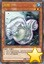 | 白鳝 | [怪兽|效果] 鱼/水 [★2] 600/200 ①：这张卡召唤成功的回合，这张卡可以向对方直接攻击。 ②：这张卡从墓地的特殊召唤成功的场合才能发动。这个回合，这张卡当作调整使用。 |
| 白斗气海豚 | [怪兽|效果|同调] 鱼/水 [★6] 2400/1000 调整＋调整以外的怪兽1只以上 ①：1回合1次，以对方场上1只表侧表示怪兽为对象才能发动。那只怪兽的攻击力直到回合结束时变成原本攻击力的一半。 ②：这张卡被对方破坏送去墓地的场合，把这张卡以外的自己墓地1只水属性怪兽除外才能发动。这张卡当作调整使用特殊召唤。 | |
| 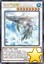 | 白斗气白鲸 | [怪兽|效果|同调] 鱼/水 [★8] 2800/2000 水属性调整＋调整以外的水属性怪兽1只以上 ①：这张卡同调召唤成功时才能发动。对方场上的攻击表示怪兽全部破坏。 ②：这张卡在同1次的战斗阶段中最多2次可以向怪兽攻击。 ③：这张卡向守备表示怪兽攻击的场合，给与攻击力超过那个守备力的数值的战斗伤害。 ④：这张卡被对方破坏送去墓地的场合，把这张卡以外的自己墓地1只水属性怪兽除外才能发动。这张卡当作调整使用特殊召唤。 |
| 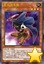 | 亚马逊斥候 | [怪兽|效果] 战士/地 [★3] 800/1200 这个卡名的①的效果1回合只能使用1次。 ①：把这张卡以外的手卡1只「亚马逊」怪兽给对方观看才能发动。这张卡从手卡特殊召唤。 ②：这张卡被战斗破坏送去墓地时，以「亚马逊斥候」以外的自己墓地1只「亚马逊」怪兽为对象才能发动。那只怪兽回到手卡或者卡组。 |
 | 亚马逊女帝 | [怪兽|效果|融合] 战士/地 [★8] 2800/2400 「亚马逊女王」＋「亚马逊」怪兽 ①：只要这张卡在怪兽区域存在，这张卡以外的自己场上的「亚马逊」卡不会被战斗·效果破坏。 ②：自己的「亚马逊」怪兽向守备表示怪兽攻击的场合，给与对方为攻击力超过那个守备力的数值的战斗伤害。 ③：融合召唤的这张卡被战斗破坏的场合或者因对方的效果从场上离开的场合才能发动。从自己的手卡·卡组·墓地选1只「亚马逊女王」特殊召唤。 |
| 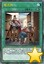 | 慢活族 | [魔法|永续] 自己场上没有怪兽存在的场合，自己主要阶段1开始时才能把这张卡发动。 ①：只要这张卡在魔法与陷阱区域存在，以下效果适用。 ●把怪兽通常召唤的玩家在那个回合不能把怪兽特殊召唤。 ●把怪兽特殊召唤的玩家在那个回合不能把怪兽通常召唤。 |
 | 剑斗兽 罪斗 | [怪兽|效果] 兽战士/暗 [★5] 0/1000 ①：对方怪兽的直接攻击宣言时才能发动。这张卡从手卡特殊召唤，那只对方怪兽的攻击对象转移为这张卡进行伤害计算。这张卡不会被那次战斗破坏。 ②：这张卡用「剑斗兽」怪兽的效果特殊召唤成功的场合才能发动。从卡组把1只「剑斗兽」怪兽送去墓地。 ③：这张卡进行战斗的战斗阶段结束时让这张卡回到持有者卡组才能发动。从卡组把「剑斗兽 罪斗」以外的1只「剑斗兽」怪兽特殊召唤。 |
 | 命运英雄 梦乡人 | [怪兽|效果] 战士/暗 [★1] 0/600 这个卡名的效果1回合只能使用1次。 ①：这张卡在墓地存在，自己的「命运英雄」怪兽进行战斗的伤害计算时才能发动。这张卡从墓地特殊召唤，那只自己怪兽不会被那次战斗破坏，那次战斗发生的对自己的战斗伤害变成0。这个效果特殊召唤的这张卡从场上离开的场合除外。 |
| 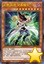 | 幻影英雄 突袭魔女 | [怪兽|效果] 战士/暗 [★8] 2700/1900 这张卡表侧表示上级召唤的场合，可以作为怪兽的代替而把自己场上的陷阱卡解放。 ①：这张卡召唤成功时才能发动。对方场上的魔法·陷阱卡全部破坏。这个效果发动的回合，自己不是「英雄」怪兽不能特殊召唤。 |
| 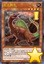 | 巨王棘龙 | [怪兽|效果] 恐龙/地 [★4] 2000/1200 这个卡名的②的效果1回合只能使用1次。 ①：这张卡不能直接攻击。 ②：这张卡被除外的场合才能发动。这张卡特殊召唤。这个效果特殊召唤的这张卡的攻击力上升除外的自己的恐龙族怪兽数量×200。 |
| 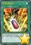 | 究极进化药 | [魔法] 这个卡名的卡在1回合只能发动1张。 ①：从自己的手卡·墓地把恐龙族怪兽和恐龙族以外的怪兽各1只除外才能发动。从手卡·卡组把1只7星以上的恐龙族怪兽无视召唤条件特殊召唤。 |
| 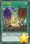 | 时空超越 | [魔法] ①：从自己墓地把恐龙族怪兽2只以上除外才能发动。从自己的手卡·墓地选持有和除外的怪兽的等级合计相同等级的1只恐龙族怪兽特殊召唤。这个效果特殊召唤的怪兽在这个回合不能攻击。 |
| 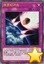 | 侏罗纪冲击 | [陷阱] ①：自己场上有恐龙族怪兽2只以上存在，自己基本分比对方少的场合才能发动。场上的怪兽全部破坏，自己受到破坏的怪兽数量×1000伤害。那之后，给与对方为和自己受到的伤害相同数值的伤害。这张卡的发动后，直到下个回合的结束时双方不能把怪兽召唤·特殊召唤。 |
| 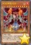 | 时械神 拉结恩 | [怪兽|效果] 天使/炎 [★10] 0/0 这张卡不能从卡组特殊召唤。 ①：自己场上没有怪兽存在的场合，这张卡可以无需解放召唤。 ②：这张卡不会被战斗·效果破坏，这张卡的战斗发生的对自己的战斗伤害变成0。 ③：这张卡进行战斗的战斗阶段结束时发动。对方墓地的卡全部返回卡组。 ④：1回合1次，对方抽卡的场合发动。给予对方1000伤害。 ⑤：自己准备阶段发动。这张卡返回持有者卡组。 |
| 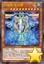 | 时械神 亚法恩 | [怪兽|效果] 天使/水 [★10] 0/0 这张卡不能从卡组特殊召唤。 ①：自己场上没有怪兽存在的场合，这张卡可以不用解放作召唤。 ②：这张卡不会被战斗·效果破坏，这张卡的战斗发生的对自己的战斗伤害变成0。 ③：这张卡进行战斗的战斗阶段结束时发动。对方场上的魔法·陷阱卡全部回到卡组。 ④：这张卡从场上送去墓地的场合才能发动。自己从卡组抽1张。 ⑤：自己准备阶段发动。这张卡回到持有者卡组。 |
 | 时械神 然迪恩 | [怪兽|效果] 天使/风 [★10] 0/0 这张卡不能从卡组特殊召唤。 ①：自己场上没有怪兽存在的场合，这张卡可以不用解放作召唤。 ②：这张卡不会被战斗·效果破坏，这张卡的战斗发生的对自己的战斗伤害变成0。 ③：这张卡进行战斗的战斗阶段结束时，自己基本分比4000少的场合发动。自己基本分变成4000。 ④：自己准备阶段发动。这张卡回到持有者卡组。 |
| 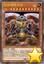 | 时械神 卡米恩 | [怪兽|效果] 天使/地 [★10] 0/0 这张卡不能从卡组特殊召唤。 ①：自己场上没有怪兽存在的场合，这张卡可以不用解放作召唤。 ②：这张卡不会被战斗·效果破坏，这张卡的战斗发生的对自己的战斗伤害变成0。 ③：这张卡进行战斗的战斗阶段结束时发动。选对方场上1张卡回到持有者卡组，给与对方500伤害。不能对应这个效果的发动让卡的效果发动。 ④：自己准备阶段发动。这张卡回到持有者卡组。 |
 | No.41 泥睡魔兽 睡梦貘 | [怪兽|效果|超量] 恶魔/地 [☆4] 2100/2000 4星怪兽×2 这张卡的控制者在每次自己准备阶段把这张卡1个超量素材取除。不能取除的场合，这张卡破坏。 ①：攻击表示的这张卡不会成为对方的效果的对象，不会被对方的效果破坏。 ②：只要这张卡在怪兽区域守备表示存在，场上的表侧表示怪兽变成守备表示，场上的守备表示怪兽发动的效果无效化。 |
| 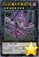 | No.68 魔天牢 桑达尔丰 | [怪兽|效果|超量] 岩石/暗 [☆8] 2100/2700 8星怪兽×2 ①：这张卡的攻击力·守备力上升双方墓地的怪兽数量×100。 ②：1回合1次，把这张卡1个超量素材取除才能发动。直到对方回合结束时，这张卡不会被效果破坏，双方不能把墓地的怪兽特殊召唤。 |
| 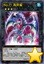 | No.71 海异鲨 | [怪兽|效果|超量] 龙/水 [☆3] 0/2000 3星怪兽×2 ①：1回合1次，以「No.71 海异鲨」以外的自己墓地1只「No.」超量怪兽为对象才能发动。那只怪兽特殊召唤，把这张卡1个超量素材在那只怪兽下面重叠作为超量素材。 ②：这张卡被送去墓地的场合才能发动。从卡组选1张「升阶魔法」魔法卡在卡组最上面放置。 |
| 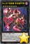 | No.89 电脑兽 系统破坏神 | [怪兽|效果|超量] 念动力/暗 [☆7] 2800/1200 7星怪兽×2 这个卡名的③的效果1回合只能使用1次。 ①：1回合1次，把这张卡1个超量素材取除才能发动。把对方的额外卡组确认，选那之内的1张里侧表示除外。 ②：这张卡战斗破坏怪兽的战斗阶段结束时，以对方墓地1张卡为对象才能发动。那张卡里侧表示除外。 ③：对方的卡被里侧表示除外的场合才能发动。把里侧表示除外中的对方的卡数量的卡从对方卡组上面里侧表示除外。 |
| 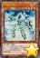 | 均衡负载王 | [怪兽|效果] 电子界/光 [★4] 1700/1200 这个卡名的②的效果1回合只能使用1次。 ①：1回合1次，支付1000基本分才能发动。这个回合自己在通常召唤外加上只有1次，自己主要阶段可以把1只电子界族怪兽召唤。 ②：这张卡被除外的场合才能发动。从手卡把1只4星以下的怪兽特殊召唤。 |
| 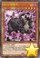 | ROM云雌羊 | [怪兽|效果] 电子界/暗 [★4] 1800/0 ①：这张卡召唤成功时，以「ROM云雌羊」以外的自己墓地1只电子界族怪兽为对象才能发动。那只怪兽加入手卡。 ②：这张卡被战斗·效果破坏的场合才能发动。从卡组把「ROM云雌羊」以外的1只4星以下的电子界族怪兽特殊召唤。 |
| 点阵跳离士 | [怪兽|效果] 电子界/地 [★1] 0/2100 这个卡名的①②的效果1回合只能有1次使用其中任意1个，决斗中各能使用1次。 ①：这张卡被送去墓地的场合才能发动。这张卡特殊召唤。 ②：这张卡被除外的场合才能发动。这张卡特殊召唤。 | |
| 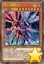 | 双汇编亚龙 | [怪兽|效果] 电子界/暗 [★8] 2800/1000 这个卡名的①的效果1回合只能使用1次。 ①：这张卡在手卡·墓地存在的场合，从手卡以及自己场上的表侧表示怪兽之中把2只电子界族怪兽除外才能发动。这张卡特殊召唤。这个效果特殊召唤的这张卡的攻击力变成一半。 ②：1回合1次，把1张手卡除外才能发动。选持有这张卡的攻击力以下的攻击力的场上1只怪兽除外。 |
| 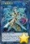 | 三栅极男巫 | [怪兽|效果|连接] 电子界/地 [LINK-3] 2200/- [↑][←][→] 衍生物以外的怪兽2只以上 ①：得到和这张卡互相连接的怪兽数量的以下效果。 ●1只以上：和这张卡互相连接的怪兽在和对方怪兽进行战斗的场合，那只怪兽给与对方的战斗伤害变成2倍。 ●2只以上：1回合1次，以场上1张卡为对象才能发动。那张卡除外。 ●3只：1回合1次，魔法·陷阱·怪兽的效果发动时才能发动。那个发动无效并除外。 |
| 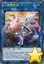 | 二进制女巫 | [怪兽|效果|连接] 电子界/地 [LINK-2] 1600/- [←][→] 衍生物以外的怪兽2只 ①：得到和这张卡互相连接的怪兽数量的以下效果。 ●1只以上：和这张卡互相连接的怪兽用和对方怪兽的战斗给与对方战斗伤害时才能发动。自己基本分回复那个数值。 ●2只：1回合1次，以自己场上2只表侧表示怪兽为对象才能发动。直到回合结束时，那2只怪兽之内1只的攻击力变成一半，另1只的攻击力上升那个数值。这个效果在对方回合也能发动。 |
| 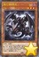 | 真红眼幼龙 | [怪兽|效果] 龙/暗 [★3] 1200/700 ①：这张卡被战斗破坏送去墓地时才能发动。从卡组把1只7星以下的「真红眼」怪兽特殊召唤，墓地的这张卡当作攻击力上升300的装备卡使用给那只怪兽装备。 ②：给怪兽装备的这张卡被送去墓地的场合才能发动。从自己的卡组·墓地选1只龙族·1星怪兽加入手卡。 |
| 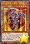 | 真红眼铁骑士-基亚·弗里德 | [怪兽|效果] 战士/暗 [★4] 1800/1600 ①：1回合1次，这张卡有装备卡被装备的场合才能发动。那些装备卡破坏。那之后，可以选对方场上1张魔法·陷阱卡破坏。 ②：1回合1次，把这张卡装备的自己场上1张装备卡送去墓地，以自己墓地1只7星以下的「真红眼」怪兽为对象才能发动。那只怪兽特殊召唤。 |
| 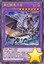 | 真红眼黑刃龙 | [怪兽|效果|融合] 龙/暗 [★7] 2800/2400 「真红眼黑龙」＋战士族怪兽 ①：「真红眼」怪兽的攻击宣言时以自己墓地1只战士族怪兽为对象才能发动。那只怪兽当作攻击力上升200的装备卡使用给这张卡装备。 ②：自己场上的卡为对象的卡的效果发动时，把自己场上1张装备卡送去墓地才能发动。那个发动无效并破坏。 ③：这张卡被战斗·效果破坏的场合才能发动。给这张卡装备的怪兽从自己墓地尽可能特殊召唤。 |
| 附锁链的真红眼牙 | [陷阱] ①：以自己场上1只「真红眼」怪兽为对象才能把这张卡发动。这张卡当作装备卡使用给那只怪兽装备。装备怪兽在同1次的战斗阶段中最多2次可以向怪兽攻击。 ②：把装备的这张卡送去墓地，以场上1只效果怪兽为对象才能发动。那只效果怪兽当作装备卡使用给这张卡装备过的怪兽装备。只要这个效果把怪兽装备中，装备怪兽变成和那只怪兽相同的攻击力·守备力。 | |
| 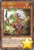 | 亚马逊王女 | [怪兽|效果] 战士/地 [★3] 1200/900 这个卡名的②的效果1回合只能使用1次。 ①：这张卡的卡名只要在场上·墓地存在当作「亚马逊女王」使用。 ②：这张卡召唤·特殊召唤成功的场合才能发动。从卡组把1张「亚马逊」魔法·陷阱卡加入手卡。 ③：这张卡的攻击宣言时把这张卡以外的自己的手卡·场上1张卡送去墓地才能发动。从卡组把「亚马逊王女」以外的1只「亚马逊」怪兽守备表示特殊召唤。 |
| 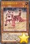 | 亚马逊宠物仔虎 | [怪兽|效果] 兽/地 [★2] 500/500 这个卡名的②的效果1回合只能使用1次。 ①：这张卡的卡名只要在场上·墓地存在当作「亚马逊宠物虎」使用。 ②：这张卡在手卡·墓地存在，自己场上有「亚马逊」怪兽召唤·特殊召唤的场合才能发动。这张卡特殊召唤。 ③：这张卡的攻击力上升自己墓地的「亚马逊」卡数量×100。 |
| 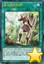 | 亚马逊的叫声 | [魔法|速攻] 这个卡名的卡在1回合只能发动1张。 ①：从卡组把「亚马逊的叫声」以外的1张「亚马逊」卡加入手卡或送去墓地。 ②：自己主要阶段把墓地的这张卡除外，以自己场上1只「亚马逊」怪兽为对象才能发动。这个回合，那只怪兽以外的自己怪兽不能攻击，作为对象的怪兽可以向对方怪兽全部各作1次攻击。 |
 | 亚马逊的急袭 | [陷阱|永续] ①：1回合1次，自己·对方的战斗阶段才能发动。从手卡把1只「亚马逊」怪兽特殊召唤。这个效果特殊召唤的怪兽的攻击力直到回合结束时上升500。 ②：自己的「亚马逊」怪兽和对方怪兽进行战斗的伤害计算后才能发动。那只对方怪兽除外。 ③：场上的这张卡被破坏送去墓地的场合，以自己墓地1只「亚马逊」怪兽为对象才能发动。那只怪兽特殊召唤。 |
| 传说的渔人二世 | [怪兽|效果] 战士/水 [★5] 2200/1800 ①：这张卡的卡名只要在场上·墓地存在当作「传说的渔人」使用。 ②：只要这张卡在怪兽区域存在并在场上有「海」存在，这张卡不受其他怪兽的效果影响。 ③：表侧表示的这张卡因对方的效果从场上离开的场合或者被战斗破坏的场合才能发动。从卡组把1只水属性·7星怪兽加入手卡。 | |
| 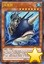 | 城塞鲸 | [怪兽|效果] 鱼/水 [★7] 2350/2150 这个卡名的①的效果1回合只能使用1次。 ①：这张卡在手卡·墓地存在的场合，把自己场上2只水属性怪兽解放才能发动。这张卡特殊召唤。 ②：这张卡特殊召唤成功的场合才能发动。从卡组选1张「潜海奇袭」在自己场上盖放。 ③：1回合1次，只以自己场上的水属性怪兽1只为对象的对方的魔法·陷阱·怪兽的效果发动时才能发动。那个发动无效并破坏。 |
| 海龙神之怒 | [魔法|速攻] 这个卡名的卡在1回合只能发动1张。 ①：场上有「海」存在的场合，以最多有自己场上的原本等级是5星以上的水属性怪兽数量的对方场上的怪兽为对象才能发动。那些怪兽破坏。直到下个回合的结束时，那些怪兽区域不能使用。 | |
| 潜海奇袭 | [陷阱|永续] ①：作为这张卡的发动时的效果处理，可以选自己的手卡·墓地1张「海」发动。 ②：场上有「海」存在的场合，表侧表示的这张卡得到以下效果。 ●1回合1次，把自己场上1只水属性怪兽直到结束阶段除外才能发动。这个回合，自己场上的表侧表示的魔法·陷阱卡不会被对方的效果破坏。 ●原本等级是5星以上的自己的水属性怪兽和对方怪兽进行战斗的伤害步骤开始时发动。那只对方怪兽破坏。 | |
| 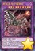 | 铠狱龙-电子暗冥龙 | [怪兽|效果|融合] 机械/暗 [★10] 2000/2000 「电子暗黑」效果怪兽×5 这张卡用融合召唤才能从额外卡组特殊召唤。 ①：这张卡特殊召唤成功的场合才能发动。从自己墓地选1只龙族怪兽或者机械族怪兽当作装备卡使用给这张卡装备。 ②：这张卡的攻击力上升这张卡的效果装备的怪兽的原本攻击力数值。 ③：对方把魔法·陷阱·怪兽的效果发动时，把自己场上1张装备卡送去墓地才能发动。那个发动无效并破坏。 |
常见问题
Q.某张卡有BUG！
A.请到页面下方留言反馈，或联系233服QQ群里的尸体233（QQ：921439818）。
Q.卡片右下角的黄色星星是什么意思？
A.表示那张卡暂未有实卡，是先行卡。其卡片密码暂时使用临时密码（1开头的9位数）。
这种卡需要在23333端口才能使用。此外部分使用同样密码体系的服务器（不包括Checkmate）也可以使用。
实卡发售后，对应的带星星的先行卡会失效，请更新游戏，来获取正式的版本。
Q.卡片右下角的绿色加号是什么意思？
A.表示那张卡已有实卡但YGOPRO的国内官方版本暂未更新，是本补丁增加的卡片。其卡片密码是正式密码。
这种卡在233端口更新前只能在23333端口使用。但其他更新速度较快的服务器（包括Checkmate）一般也可使用。
一般这种卡不久就会正式更新到233服，请关注公告，更新后请下载YGOPRO的正式更新来获取那些卡。
Q.为什么安装了最新的先行卡补丁仍然没有某些卡？
A.本补丁只包含先行卡，不包含已经正式更新的卡。
请下载YGOPRO的正式更新来获取那些卡。
Q.为什么我更新先行卡补丁之后反而有卡消失了？
A.因为那些卡已经不再是先行卡了，本补丁不再包含它们。
请下载YGOPRO的正式更新来获取那些卡。
Q.安装后没有新卡？
A.本补丁附带新卡列表的卡组。
请确保你把文件解压到了游戏文件夹里，而不是新建了一个文件夹。
电脑版需要重启游戏才能重新载入数据库。
手机版需要自定义数据库，详见使用方法。
Q.安装后新卡没有卡图？
A.请确保你解压出来了压缩包里所有文件，不能只解压1个文件。
Q.手机版找不到sdcard文件夹？
A.部分手机可能位于storage或mnt文件夹里。
Q.手机版提示没有权限？
A.同上，换个文件夹试试。
Q.某张卡不能用，提示无效卡组？
A.本补丁的最新版只能与23333端口完美兼容。
请下载YGOPRO的正式更新，并更新先行卡补丁到最新版，把端口改为23333，才能正常使用先行卡。
Q.搜索卡片时发现有重复卡片？
A.因为本补丁是先行卡补丁，正式更新的卡片可能会与本补丁的卡片重复。删除或更新本补丁即可。
Q.电脑版怎么删除补丁？
A.删除expansions文件夹或其中pre-release.cdb即可。
Q.手机版怎么删除补丁？
A.点自定义卡片数据库下面的重置卡片数据库。
如果你打过其他的补丁，还需要再自定义一次数据库，选择cards.cdb。